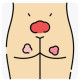

Bedsore
Rx
1.Oint Zinc oxide 20% N=1 q8h
2.Oint Bedsore N=1 q8h
3.Onin Mupirocin N=1 q8h
4.Serum NS 1lit N=1 For irrigation
Or Oint Phenytoin N=1
نکته: درتمام بیماران بدون حرکت توصیه کنید هر1-2ساعت پوزیشن تغییر بدهند.
نکته: از تشک مواج استفاده بشه.
نکته: شستشو و تجویز آنتی بیوتیک و دبریدمان نواحی نکروز شده انجام شود.
1️⃣ زخم دیابتی
2️⃣ زخم عروقی
3️⃣ سوختگی
4️⃣ سلولیت
5️⃣ تروما و آسیب پوستی
6️⃣ واسکولیت
7️⃣ استئومیلیت
Pyoderma gangrenosum 8️⃣
Delayed pressure urticaria 9️⃣
🔟 Radiation injuries , radiation dermatitis